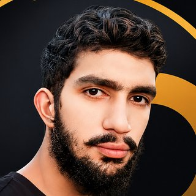

About Me
Technology with a business-first mindset.
I'm Muhammad Mudassar Elahi, a freelance web developer focused on building useful, modern and effective digital experiences.
Muhammad Mudassar Elahi

Web Developer & Entrepreneur
I work across website development, Shopify, UI/UX, SEO and custom digital solutions. My approach combines design quality with practical implementation, performance and maintainability.
I enjoy turning ideas into real digital products and helping businesses establish a stronger online presence through clear communication and dependable execution.
My focus: understand the business goal, build the right solution, test it carefully and keep the experience easy to use.
WordPressShopifyReactNext.jsHTML/CSSJavaScriptPHPSEOUI/UX